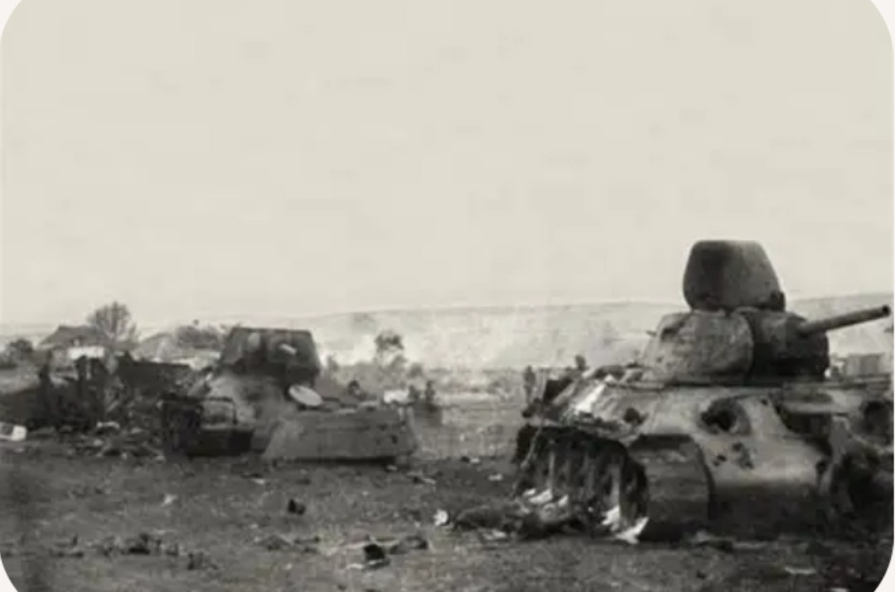

5 juillet 1943 – 23 août 1943
Région de Koursk, URSS
URSS : Fronts de Voronej et de la Steppe
Axe : Wehrmacht (Groupes d’armées Centre et Sud)
La bataille de Koursk est l’affrontement décisif entre les forces blindées allemandes et soviétiques. Après Stalingrad, l’Allemagne tente de reprendre l’initiative en lançant l’opération Citadelle, une offensive massive visant à éliminer le saillant de Koursk.
Les Allemands attaquent le 5 juillet 1943 avec des divisions blindées équipées de Panzer IV, Panther et Tiger. Les Soviétiques, parfaitement informés des plans allemands, ont préparé des défenses gigantesques : mines, tranchées, canons antichars, lignes fortifiées. Le 12 juillet, la bataille de Prokhorovka devient l’un des plus grands affrontements de chars jamais vus. L’offensive allemande s’enlise et finit par échouer.
Victoire soviétique. L’Allemagne perd définitivement l’initiative stratégique sur le front de l’Est.
Koursk marque la fin des grandes offensives allemandes en URSS. Après cette bataille, l’Armée rouge lance une série d’opérations qui repousseront progressivement la Wehrmacht jusqu’à Berlin.